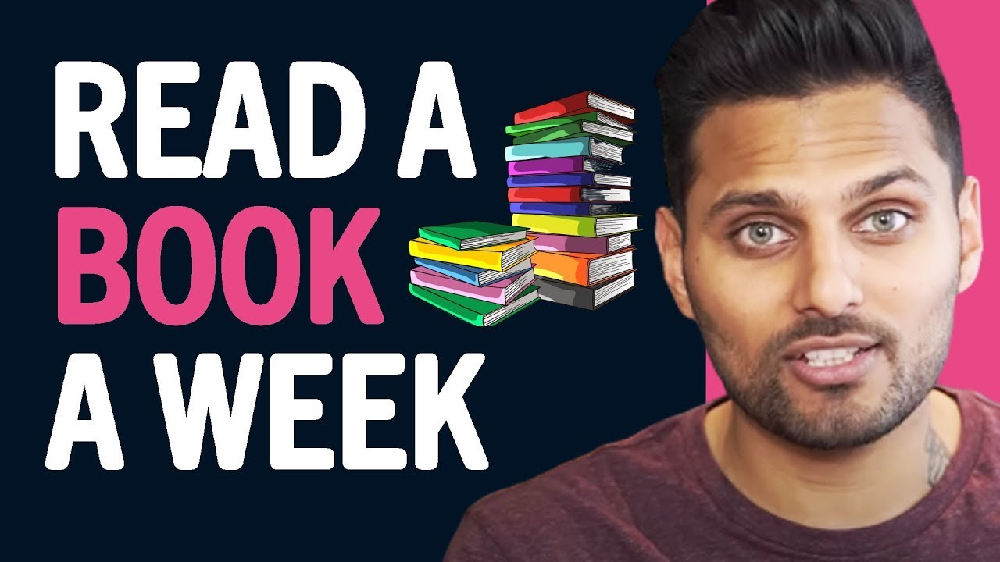

E-Portfolio
Uva Wellassa University
Enrolment No: UWU/ICT/24098
Communicative English - FOT
Continuous Assessment 1
Interview 1: How to Read a Book a day to change your life

Date Accessed
25 May 2026
Reference
Video Title: How to Read a Book
Platform: YouTube
Link: https://youtu.be/c9F5kMUfFKk
Summary
This video explains effective reading techniques and how readers can understand books more deeply. The speaker discusses the importance of active reading instead of simply reading words. The video highlights methods such as identifying the main idea, taking notes, asking questions while reading, and reflecting on the author's message. The main concept is that reading is not only about completing a book but also about understanding, analyzing, and learning from it. Good readers interact with the text and connect new information with their existing knowledge.
My Opinion
I found this video very useful because it teaches practical strategies for improving reading skills. Many students read books only for examinations, but this video shows how reading can become a meaningful learning experience. The explanations were clear and easy to understand. I believe these techniques can help students improve both their academic performance and general knowledge.
Reflective Growth
From this video, I learnt that reading effectively requires concentration and active participation. I realized that asking questions and taking notes can improve understanding and memory. I will try to apply these techniques when reading textbooks and other educational materials.
New Vocabulary / Expressions
- Active Reading – reading with focus and engagement.
- Comprehension – the ability to understand something.
- Critical Thinking – analyzing information carefully before accepting it.
- Take Notes – writing important points while learning.
Interview 2: The Woman Who Makes Millionaires: Only 1% of People Do This! The PPF Framework Will 10x Your Income!
.png)
Date Accessed
28 May 2026
Reference
Host: Steven Bartlett
Guest: Natalie Dawson,
Platform: YouTube
Link: https://www.youtube.com/watch?v=VsTMXuIV3OM
Summary
In this interview, Stephen Bartlett talks to Natalie Dawson, a successful entrepreneur who has co-founded two nine-figure businesses. Natalie explains the key principles that have helped her achieve success in business and life. She emphasizes the importance of hard work, communication skills, goal setting and personal responsibility.
One of the key ideas discussed is a goal setting framework called PPF (Personal, Professional and Financial Goals). Natalie explains that people should set goals in these three areas for one year, three years, and five years.
The interview also emphasizes the importance of communication. Natalie introduces her communication framework, called VCE (Vision, Commitment, Execution), which helps people communicate ideas clearly and persuade others effectively.
Another important lesson is that success means solving the right problems, managing time effectively, and taking responsibility for personal growth. She argues that hard work is necessary to achieve extraordinary results.
My Opinion
I found this interview very encouraging and educational. Instead of just discussing theories, Natalie Dawson shared practical advice. I especially liked her explanation of setting personal, professional and financial goals because it provides a clear road map to success.
Reflective Growth
This interview taught me that success is not just about hard work but about working on the right goals. I learned that successful people plan their future carefully and align their daily activities with their long-term goals.
- Financial Literacy - Understanding how money and finances work
- Commitment - A promise to complete a task or responsibility
- Execution - The process of carrying out a plan
- Responsibility - Being accountable for actions and decisions
- Financial Goals - Targets related to income, savings, and wealth
- Core Values - Fundamental beliefs that guide behavior
Interview 3: What Really Won the Trillion-Dollar Supreme Court Case | Neal Kumar Katyal | TED
.png)
Date Accessed
29 May 2026
Reference
Speaker: Neal Katyal
Platform: TED Talk (YouTube)
Link: https://youtu.be/g3M3WaixeOw
Summary
In this TED Talk, Neal Katyal shares the story of one of the most important Supreme Court cases of his career. He was asked to challenge a presidential policy related to tariffs affecting the global economy. Many experts believed the case was unwinnable, but Katyal and his team prepared extensively and eventually succeeded.
He explains how four important teachers helped him. Ben, a performance coach, taught him to replace fear with opportunity by changing “I have to do this” into “I get to do this.” Liz, an improv coach, taught him the importance of listening and connecting with others.
Bob, a meditation coach, helped him develop focus and calmness under pressure. Finally, Harvey, an AI system, helped predict the questions that Supreme Court justices were likely to ask during the hearing.
My Opinion
I found this TED Talk extremely inspiring and thought-provoking. It showed that success is not achieved through intelligence alone but through preparation, confidence, communication, and human connection. I was especially interested in how AI was used to support legal research while human judgment remained essential.
The speaker's experiences taught me that challenges can be overcome when we maintain confidence and continue learning from others.
Reflective Growth
This talk taught me several valuable lessons. First, I learned that changing my mindset can transform fear into motivation. Second, I realized that listening carefully is an important communication skill. Third, I learned that technology such as AI should be used as a tool rather than a replacement for human thinking.
Most importantly, I learned that genuine human connection remains one of the most valuable skills in the modern world.
- Imposter Syndrome - Feeling that you do not deserve your success
- Constitution - The fundamental laws of a country
- Predictability - The quality of being expected or consistent
- Persuade - To convince someone to believe or do something
- Integrity - Honesty and strong moral principles
- Foresight - The ability to predict or prepare for the future
Interview 4: How Screens Stole Childhood — and How to Get It Back
.png)
Date Accessed
01 June 2026
Reference
Speaker: Jonathan Haidt
Platform: TED Talk (YouTube)
Link: https://youtu.be/DH9L7vJ03DE
Summary
In this TED Talk, Jonathan Haidt discusses the negative effects of modern technology on children and teenagers. He explains that humans are naturally social beings who need real-life interactions and strong community connections. However, the increasing use of smartphones, social media, and digital devices has reduced face-to-face communication among young people.
The speaker argues that excessive social media use has contributed to higher levels of loneliness, anxiety, and depression. He also explains that spending too much time watching short videos can reduce young people's ability to focus and pay attention for long periods.
Haidt introduces three important principles of techno-skepticism. First, children’s brain development should be protected during puberty. Second, schools should prioritize people, books, and direct learning experiences instead of screens. Third, parents should be cautious about artificial relationships created by AI chatbots and virtual companions.
The talk concludes by emphasizing that technology should support human life rather than replace genuine human relationships and experiences.
My Opinion
I found this TED Talk very informative and relevant to modern society. The speaker presented strong arguments about the dangers of excessive technology use among children and teenagers. I agree that spending too much time on social media can negatively affect mental health and concentration.
Reflective Growth
From this TED Talk, I learned that human connection is essential for personal growth and happiness. Real-life friendships and social interactions cannot be completely replaced by technology.
I also learned that excessive screen time may affect attention, learning ability, and emotional well-being.
- Techno-Skepticism - Being cautious about the effects of technology
- Ultra-Social - Extremely dependent on social relationships
- Anxiety - A feeling of worry or nervousness
- Cognitive - Related to thinking and learning
- Artificial Relationships - Relationships created through technology rather than real human interaction
- Flourishing - Growing and developing successfully
Interview 5: 3 Things I Wish I Knew When I Was Broke
.png)
Date Accessed
02 June 2026
Reference
Speaker: Vivian Tu
Platform: TED Talk (YouTube)
Link: https://youtu.be/Ojk3QV5U5Jc
Summary
In this TED Talk, Vivian Tu shares her personal journey from living wage to paycheck to becoming a successful financial educator. She describes a difficult period in her life when she struggled to manage her finances despite having a prestigious job on Wall Street. This experience inspired her to learn more about personal finance and ultimately help others do the same.
Vivian offers three important lessons she wishes she had known earlier. First, she encourages people to learn the language of finance by understanding terms like investments, savings accounts and credit scores.
Second, she emphasizes the importance of building a community where money can be discussed openly without fear or shame.
Third, she explains that modern financial challenges require modern solutions, including online banking, robo-advisors and financial technology applications.
My Opinion
I found this TED Talk very practical and inspiring. Vivian Tu explained financial concepts simply and relatably, making them easy to understand. I especially like her message that asking questions is not a sign of weakness, but a step towards becoming financially savvy.
Reflective Growth
From this TED Talk, I learned that financial literacy is an important life skill that many people are not taught in school. Understanding financial terms and concepts can help individuals make better decisions about saving, investing and managing money.
I also learned that discussing money openly helps people learn from each other's experiences. Furthermore, technology can provide useful tools for improving financial management and planning for the future.
- Financial Literacy - The ability to understand and manage money effectively
- Investment - Using money to earn future profits
- Wealth Gap - The difference in wealth between groups of people
- Robo-Advisor - A digital platform that provides automated financial advice
- Prosperity - A state of financial success and well-being
- Financial Mentor - A person who provides guidance about money management
Interview 6: Beware the Power of Prediction
.png)
Date Accessed
03 June 2026
Reference
Speaker: Carissa Véliz
Platform: TED Talk (YouTube)
Link: https://youtu.be/OS4wHmKtH-Q
Summary
In this TED talk, Carissa Véliz discusses the hidden power of predictions, especially those made using artificial intelligence (AI) She explains that many people think predictions are just facts about the future, but they often influence and shape the future.
The speaker argues that predictions about human behavior are different from predictions about the weather or natural events. When people believe prophecies about themselves, they may change their actions and unwittingly make those prophecies come true. This is called a self-fulfilling prophecy.
Véliz warns that predictions can be used as tools of power and manipulation. Companies, governments, and technology leaders can use predictive algorithms to influence public behavior, make decisions about credit, insurance, or employment, and create unfair outcomes. She emphasizes that predictive systems can hide injustice because predictions are not true and cannot always be challenged.
The story ends by encouraging people to think critically about predictions, to question the "inevitability" of the future, and to remember that the future is not fixed but can be shaped by human choices.
My Opinion
I found this TED Talk very thoughtful and relevant to today's world. The speaker offered a unique perspective on AI and predictive technology that I had not previously considered. I agree that people should be careful about accepting predictions as absolute truths.
Reflective Growth
From this TED Talk, I learned that predictions are not always objective facts. They can influence people's behavior and influence important decisions in society. I also learned that AI systems can produce unfair results when used to predict human behavior.
Another important lesson was that uncertainty is not always negative. The future is not predetermined, and individuals have the power to make choices that change outcomes. This idea inspired me to be more confident in shaping my own future rather than depending on what others predict.
- Prediction - A statement about what may happen in the future
- Prophecy - A prediction about future events
- Manipulation - Influencing people unfairly for personal gain
- Algorithm - A set of rules used by computers to solve problems or make decisions
- Self-Fulfilling Prophecy - A prediction that becomes true because people act according to it
- Surveillance - The monitoring of people’s activities and behavior
- Authoritarianism - A system where power is concentrated and freedoms are limited
Interview 7: Why Humans Should Merge with AI
.png)
Date Accessed
05 June 2026
Reference
Speaker: D. Scott Phoenix
Platform: TED Talk (YouTube)
Link: https://youtu.be/C18aaP4lvUk
Summary
In this TED Talk, D. Scott Phoenix discusses the future relationship between humans and artificial intelligence (AI). Throughout history, he explains, life's greatest advances have come when separate entities have combined and worked together. He provides an example of how ancient cells joined together billions of years ago to lead to the development of complex life on Earth.
The speaker argues that humanity is approaching another major transition: the merging of humans and AI. According to him, AI is becoming more and more powerful, and if humans are separated from it, AI may eventually replace many human roles. Instead, he believes humans should integrate with AI through advanced technologies such as brain-computer interfaces and neural implants.
Phoenix points out that this integration has already begun through smartphones, smart devices and digital tools that support our memory and decision-making. He predicts that future technologies will allow people to learn skills quickly, communicate directly through thought, and access information instantly.
However, he also warns that technological advances alone are not enough. Society must remain united and supportive during this transition. If people are divided or fail to support each other, the transition can do more harm than good.
My Opinion
I found this TED Talk very interesting because it presents a different perspective on artificial intelligence. Most discussions of AI focus on the dangers of the technology, but this speaker suggests that humans can benefit from working alongside AI instead of competing against it.
Although the idea of combining human intelligence with AI may seem futuristic, some examples such as smartphones and neural implants show that this process is already happening. Although I think there are risks, I agree that society needs to prepare for technological change while ensuring that human values are important.
Reflective Growth
From this TED talk I learned that technological change has always been a part of human history. The speaker helped me understand that many of the tools we use today have already expanded our capabilities and can be seen as early forms of human-AI integration.
I also learned that cooperation is essential in changing times. New technologies can create opportunities, but they can also create challenges if people are left behind. Therefore, society must work together to ensure that technological progress benefits everyone.
- Merger - The joining together of two separate entities
- Transition - A process of change from one state to another
- Neural Implant - An electronic device connected to the brain
- Integration - Combining different things into a unified whole
- Civilization - An advanced human society
- Innovation - The introduction of new ideas or technologies
Interview 8: 3 Habits to Practice Curiosity — and Escape Your Phone
.png)
Date Accessed
07 June 2026
Reference
Speaker: Nayeema Raza
Platform: TED Talk (YouTube)
Link: https://youtu.be/J-FzqolS5Q4
Summary
In this TED Talk, Nayeema Raza explains how smartphones and technology can reduce curiosity and real human connection. She points out that many people spend more time on their phones than talking to others. To overcome this problem, she suggests three habits: pause before using your phone, wonder instead of immediately searching for answers, and ask questions to people around you. Through personal experiences and examples, she encourages everyone to develop curiosity, strengthen relationships, and use technology in a more balanced way.
My Opinion
I found this TED Talk very relatable because smartphones are such an important part of modern life. The speaker's message made me think about how often I use my phone to find answers instead of thinking independently or talking to others.
I especially liked the three habits she suggested because they were simple and practical. That story reminded me that technology should support human connections instead of them. It encouraged me to spend more time engaging in real conversations and less time constantly checking my phone.
Reflective Growth
What I learned from this TED Talk is that curiosity is an important skill that needs to be practiced regularly. I realized that constantly relying on smartphones for answers can reduce opportunities to think critically and creatively.
- Curiosity - A strong desire to learn or know something
- Paradox - A situation that seems contradictory but may be true
- Presence - Being fully focused and engaged in the current moment
- Mindful - Being aware of one's thoughts and actions
- Connection - A close relationship or bond with others
- Distraction - Something that takes attention away from what is important
- Critical Thinking - The ability to analyze and evaluate information carefully
Interview 9: The Most Important Virtue for a Good Life
.png)
Date Accessed
08 June 2026
Reference
Speaker: Meghan Sullivan
Platform: TED Talk (YouTube)
Link: https://youtu.be/g83Xl4-mvF8
Summary
In this TED Talk, Meghan Sullivan explains that love is one of the most important qualities for living a good life. She discusses how love is difficult because it makes people emotionally vulnerable. By comparing the views of Aristotle and Jesus, she shows that true human connection comes not only from appreciating others but also from recognizing shared struggles and weaknesses. The speaker emphasizes that love helps people build strong relationships and create a more meaningful life.
My Opinion
I got a lot of inspiration because this TED Talk showed a different way of thinking about love. I agree that people often focus on differences rather than understanding each other's struggles. Examples from philosophy helped me understand why love and empathy are important in everyday life.
Reflective Growth
From this TED Talk, I learned that love is more than a feeling. It is a virtue that helps people relate to others. I also learned that vulnerability is not a weakness but a way to build trust and strong relationships. This story inspired me to be more understanding and compassionate towards others.
- Virtue - A good moral quality
- Vulnerability - Being open to emotional harm or difficulty
- Empathy - Understanding and sharing another person's feelings
- Compassion - Concern for the suffering of others
- Connection - A close relationship between people
- Philosophy - The study of ideas about life and knowledge
- Meaningful - Having importance or value
Interview 10: Stress Resets, the Ultimate Mental Health Hack
.png)
Date Accessed
11 June 2026
Reference
Speaker: Jenny Taitz
Platform: TED Talk (YouTube)
Link: https://youtu.be/wnM-6D2LGdg
Summary
In this TED Talk, Jenny Taitz explains that stress is not only caused by difficult situations but also by how people respond to them. She introduces the concept of "stress resets," which are simple techniques that help people manage stress and regain control of their emotions. The speaker explains that emotions are temporary and that people can learn healthy ways to cope instead of relying on harmful habits.
She shares three practical strategies: playing with negative thoughts instead of taking them seriously, using a half-smile to influence emotions positively, and acting opposite to unhelpful emotional urges.
Through personal experiences and psychological research, Taitz shows that small changes in thinking and behavior can improve resilience, reduce stress, and support better mental health.
My Opinion
I found this TED Talk very helpful because stress is something that everyone experiences in everyday life. The speaker presented simple techniques that could be applied immediately without the need for special equipment or lengthy training. I especially liked the idea of acting on negative emotions because it encourages positive action instead of deterring it.
Reflective Growth
From this TED Talk, I learned that stress does not have to rule my life. I've found that changing my thoughts, body language and actions can help me manage difficult emotions more effectively. The story taught me that emotions are temporary and that healthy coping strategies can improve mental well-being.
- Resilience - The ability to recover from difficulties
- Rumination - Repeatedly thinking about negative situations
- Anxiety - A feeling of worry or nervousness
- Perspective - A particular way of viewing a situation
- Cortisol - A hormone related to stress
- Mindful - Being aware of the present moment
- Coping Strategy - A method used to manage stress or problems